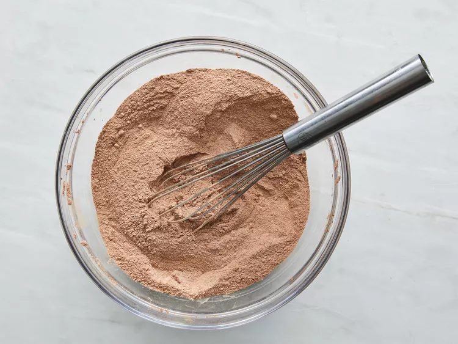
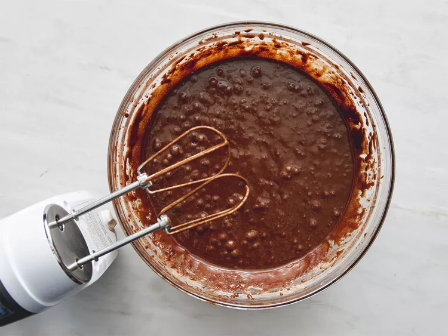
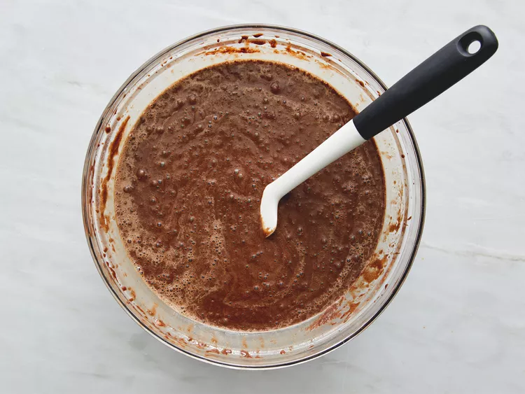
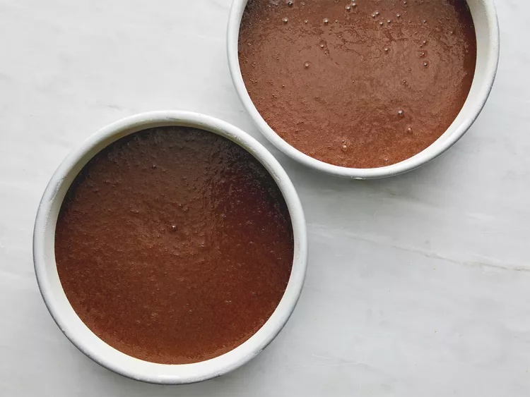
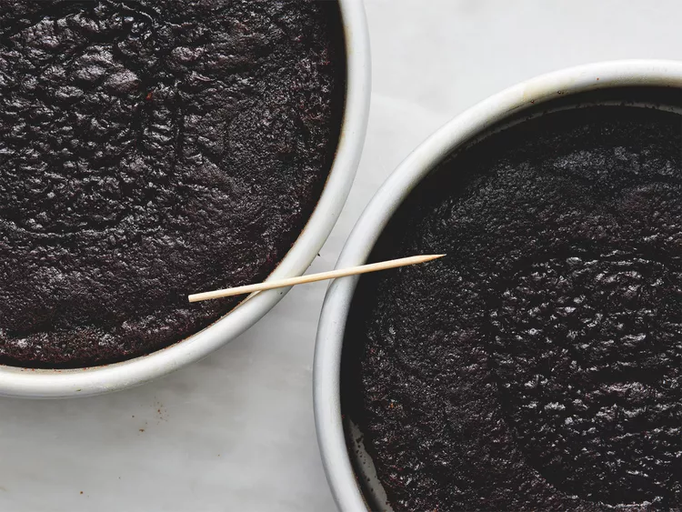
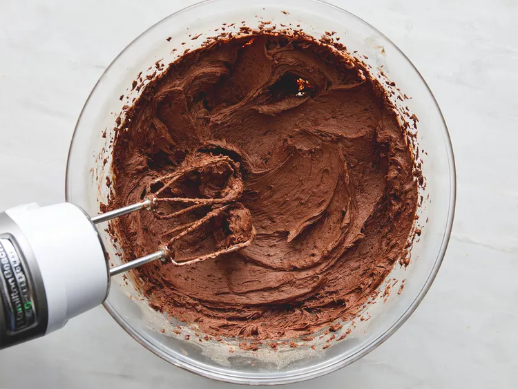
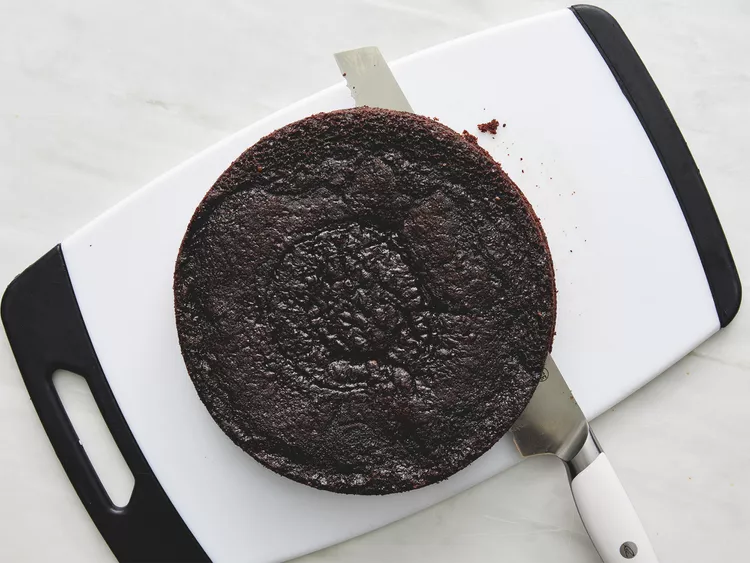
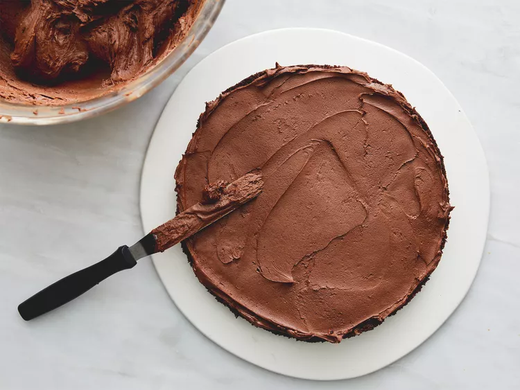
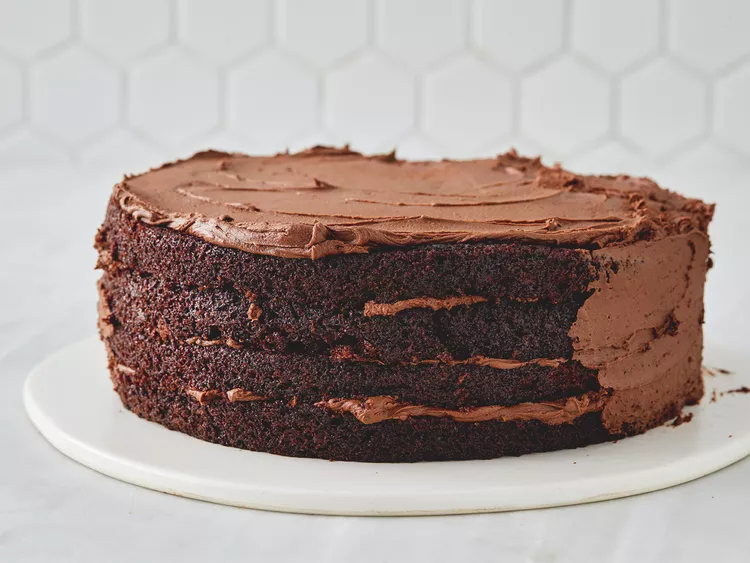

Description:
There's nothing like a good ol' back-of-the-box recipe. This recipe for Hershey's chocolate cake can be found on the baking aisle of any grocery store (specifically, on the label of the brand's signature unsweetened cocoa powder)
The iconic chocolate cake recipe was shared on Allrecipes more than 20 years ago, and has since earned almost 3,000 rave reviews and ratings. It's not hard to see why it's beloved by the Allrecipes community: Hershey's chocolate cake is incredibly indulgent, yet incredibly easy to make with basic ingredients. Try it today to see what all the fuss is about!
Duration:
Prep Time: 30 Mins Cook Time: 30 MinsTotal Time: 1 hr Servings: 12 Yeild: 1 (4-layer) 9-inch cake
Ingredients:
- 2 cups white sugar
- 1 ¾ cups all-purpose flour
- ¾ cup unsweetened cocoa powder
- 1 ½ teaspoons baking soda
- 1 ½ teaspoons baking powder
- 1 teaspoon salt
- 2 large eggs
- 1 cup milk
- ½ cup vegetable oil
- 2 teaspoons vanilla extract
- 1 cup boiling water
Steps:
- Preheat the oven to 350 degrees F (175 degrees C). Grease and flour two 9-inch round cake pans.
- Make cake: Stir together sugar, flour, cocoa, baking soda, baking powder, and salt in a bowl.
- 
- Add eggs, milk, oil, and vanilla; mix for 3 minutes with an electric mixer. Stir in boiling water by hand.
-  
- Pour evenly into the prepared pans.
- 
- Bake in the preheated oven until a toothpick inserted into the centers comes out clean, 30 to 35 minutes. Cool for 10 minutes before removing from pans to cool completely.
- 
- While cakes cool, make frosting: Cream butter with an electric mixer until light and fluffy. Stir in confectioners' sugar and cocoa alternately with milk and vanilla. Beat to a smooth spreading consistency.
- 
- Split the layers of the cooled cake horizontally, cover the top of each layer with frosting, then stack them onto a serving plate.
-  
- Frost the outside of the cake with remaining frosting.
- 
- Enjoy!
-